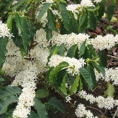
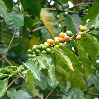
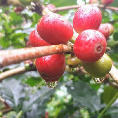

Kopi Arabika

Kopi Arabika (Coffea arabica) diduga pertama kali diklasifikasikan oleh seorang ilmuan Swedia bernama Carl Linnaeus (Carl von Linné) pada tahun 1753. Jenis Kopi yang memiliki kandungan kafeina sebasar 0.8-1.4% ini awalnya berasal dari Brasil dan Etiopia. Arabika atau Coffea arabica merupakan Spesies kopi pertama yang ditemukan dan dibudidayakan manusia hingga sekarang. Kopi arabika tumbuh di daerah di ketinggian 700–1700 m dpl dengan suhu 16-20 °C, beriklim kering tiga bulan secara berturut-turut.
Jenis kopi arabika sangat rentan terhadap serangan penyakit karat daun Hemileia vastatrix (HV), terutama bila ditanam di daerah dengan elevasi kurang dari 700 m,sehingga dari segi perawatan dan pembudayaan kopi arabika memang butuh perhatian lebih  dibanding kopi Robusta atau jenis kopi lainnya. Kopi arabika saat ini telah menguasai sebagian besar pasar kopi dunia danharganya jauh lebih tinggi daripada jenis kopi lainnya.Di Indonesia kita dapat menemukan sebagian besar perkebunan kopi arabika di daerah pegunungan toraja, Sumatra Utara, Aceh dan di beberapa daerah di pulau Jawa. Beberapa varietas kopi arabika memang sedang banyak dikembangkan di Indonesia antara lain kopi arabica jenis Abesinia, arabika jenis Pasumah, Marago, Typica dan kopi arabika Congensis.